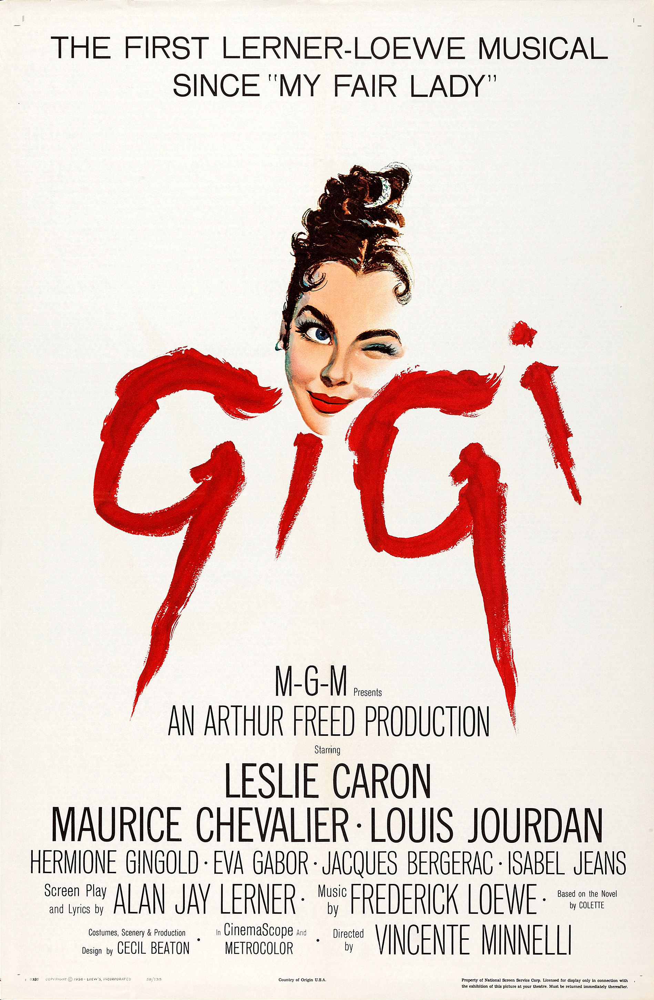

Gigi
31st Academy Awards
(Oscars 1959)
9 Nominations, 9 Awards
| Nominations | ||
|---|---|---|
| Category | Nominees | Result |
| Best Motion Picture | Arthur Freed | Won |
| Directing | Vincente Minnelli | Won |
| Writing (Screenplay--based on material from another medium) | Alan Jay Lerner | Won |
| Cinematography (Color) | Joseph Ruttenberg | Won |
| Film Editing | Adrienne Fazan | Won |
| Art Direction | Henry Grace, Keogh Gleason, Preston Ames, and William A. Horning | Won |
| Costume Design | Cecil Beaton | Won |
| Music (Scoring of a Musical Picture) | Andre Previn | Won |
| Music (Song) "Gigi" |
Alan Jay Lerner and Frederick Loewe | Won |